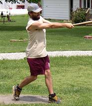
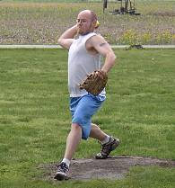
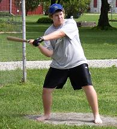
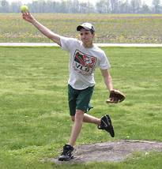
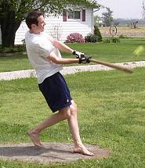
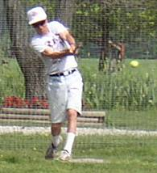
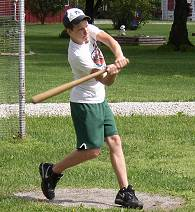
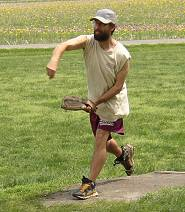
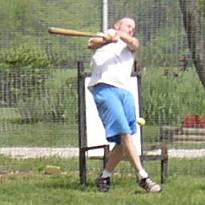
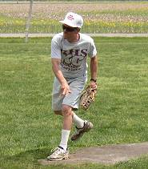

Corey Culp returned for the first time since 1998 and finished the doubleheader with 3 hits, including a homerun. |

Kevin Ryan took the loss in game one allowing 9 runs and 13 hits while striking out 4. |

Evan Woodard blasted his second homerun of the year with a bomb over the garage in right. Woodard finished 5-for-20 in the doubleheader. |

Donnie Hackney flirted with a no-hitter as he was perfect through 8 innings in the opener. He picked up the win allowing just one hit and struck out 7. |

Patrick Cork was 10-for-21 with 5 homeruns, 8 RBI and 8 runs scored in the doubleheader. |

Tony Cork went 2-for-16 on the day with a double. |

Donnie Hackney went 4-for-19 with 2 homeruns and 4 RBI on the day. |

Corey Culp picked up the win in game number two allowing just 3 hits in the 5 inning shutout. |

Kevin Ryan struggled at the plate in the doubleheader finishing with just one hit in 15 at bats. |

Tony Cork suffered his first loss of the year in game number two by allowing 4 runs on 7 hits. |
|
|